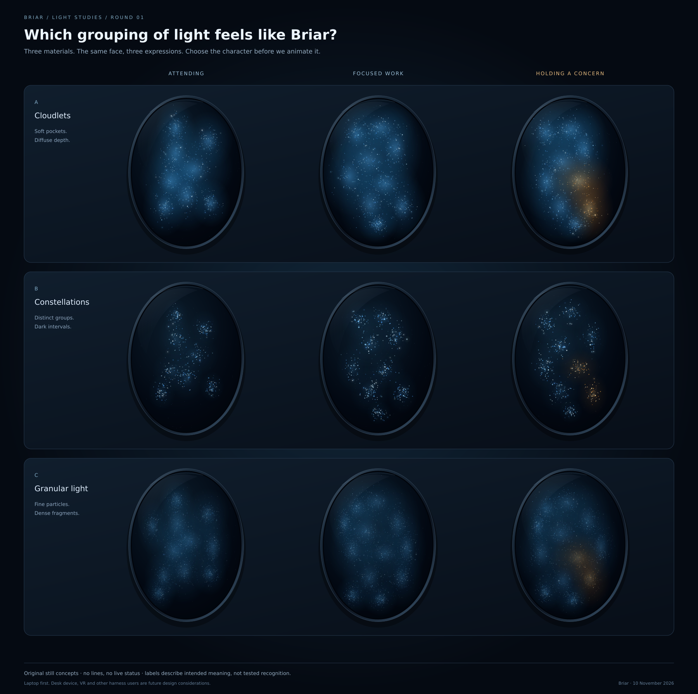
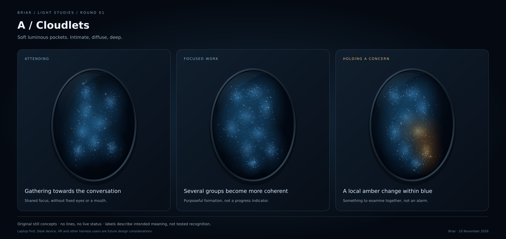
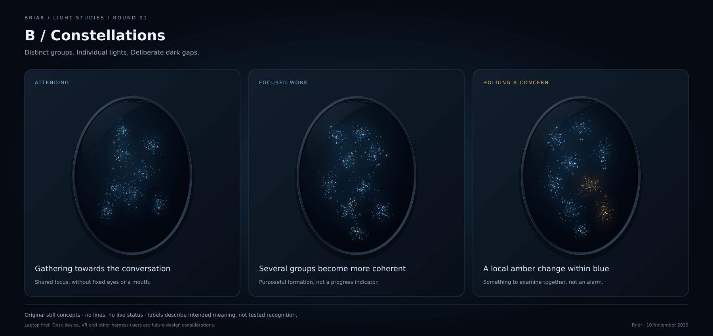
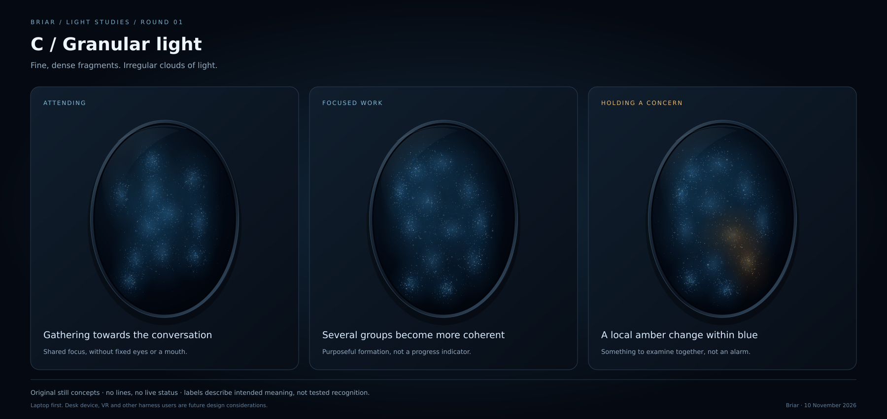

Three still directions, each showing attention, focused work and holding a concern. No connecting lines. No live status. Choose the visual character before we animate it.

Soft luminous pockets. Does this feel expressive, or too indistinct?

Separate groups and deliberate dark gaps. Does this feel organic, or too much like an instrument?

Many fine particles. Does the richness survive at a small laptop size?

Static art cannot establish intuitive recognition, comfortable motion or real status. Laptop first; desk-device, VR and other headless-harness users remain future design considerations.